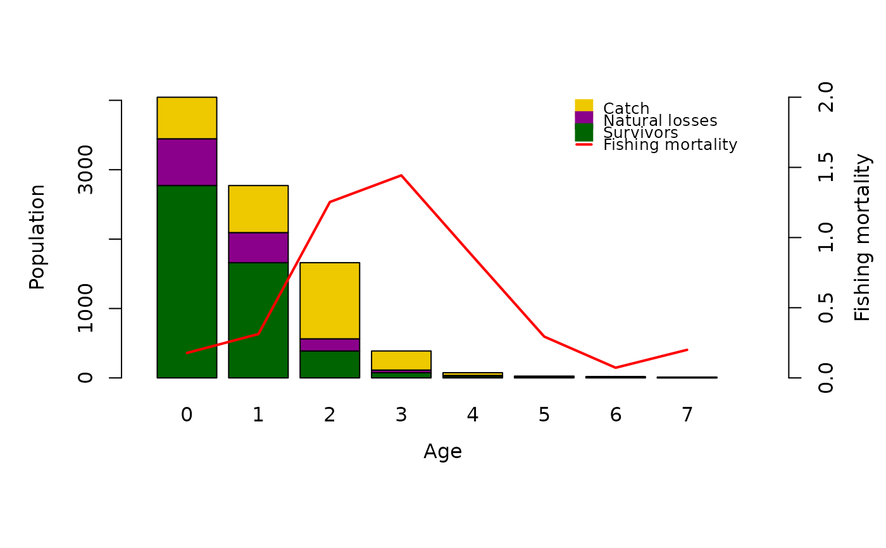
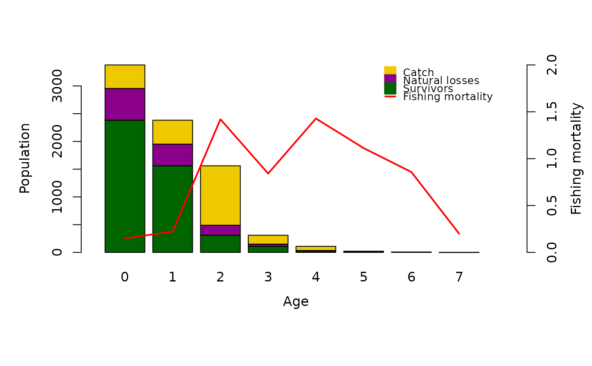
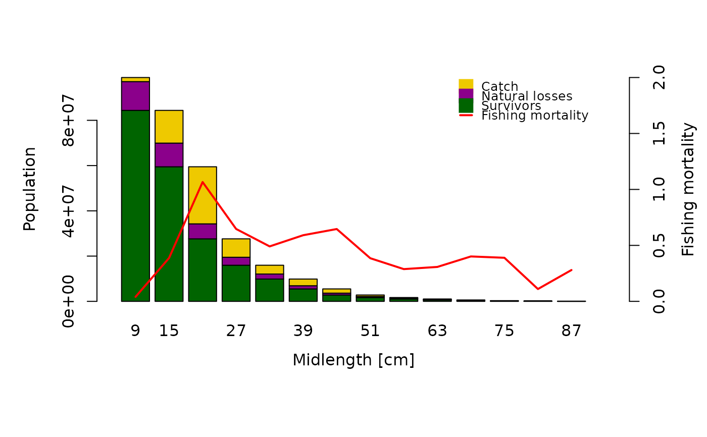
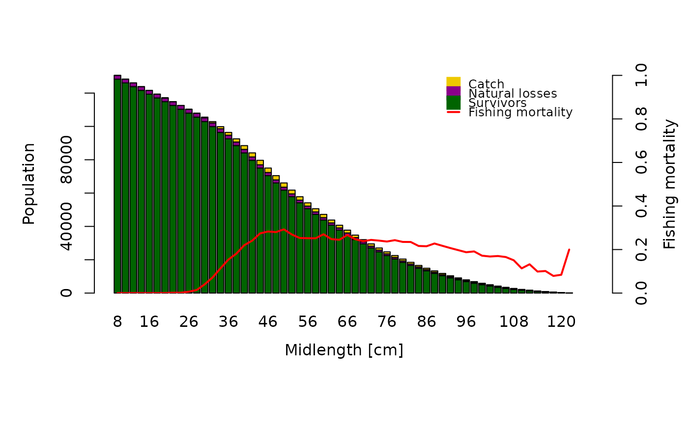

This function applies the Virtual Population Analysis (VPA) or Cohort analysis (CA). Methods used to estimate stock biomass and fishing mortality per age/length group.
Usage
VPA(
param,
catch_columns = NA,
catch_unit = NA,
catch_corFac = NA,
terminalF = NA,
terminalE = NA,
analysis_type = "VPA",
algorithm = "new",
plus_group = TRUE,
plot = FALSE,
LW_unit = "kg",
landings = NULL,
sampleWeight = NULL,
raiseBy = "sample",
boot = NULL,
natMort = NULL,
yearSel = NA,
yearCombine = FALSE,
binSize = NA,
CI = 95
)Arguments
- param
a list consisting of following parameters:
midLengthsorage: midpoints of the length class (length-frequency data) or ages (age composition data),Linf: infinite length for investigated species in cm [cm],K: growth coefficent for investigated species per year [1/year],t0: theoretical time zero, at which individuals of this species hatch,M: natural mortality [1/year] (numeric value or vector of identical length than midLengths),a: length-weight relationship coefficent (W = a * L^b; in kg/cm^b, or in g/cm^b withLW_unit = "g"),b: length-weight relationship coefficent (W = a * L^b),catch: total catch of the stock per age class or length group, as vector for pseudo cohort analysis, or a matrix with catches of subsequent years to follow a real cohort (or, for length-frequency data, one column per year selected withcatch_columns). By default the catch is in numbers (seecatch_unit). For length-frequency data with the sampled numbers of fish, provide the total landings withlandingsinstead (see Details).
- catch_columns
numerical; indicating the column of the catch matrix which should be used for the analysis.
- catch_unit
optional; unit of
catch:NA(default; numbers of fish), thousand or million individuals ("'000","'000000"), or, for the length-based VPA/CA only, the catch in weight per length group ("kg"or"tons"), which is converted into numbers with the mean body weight of each length group. Note that this is the weight of the catch of each length group, not the total landings: for the total landings uselandings.- catch_corFac
optional; additional raising factor for the catch, in case the catch does spatially or temporarily not reflect the catch of the stock in a whole year (e.g. landings of only one of several fleets). With
boot, one value per sample is possible.- terminalF
the fishing mortality rate of the last age/length group; a single value > 0.
- terminalE
the exploitation rate of the last age/length group; a single value > 0 and < 1. Only one of
terminalFandterminalEis required; if both are provided,terminalFis used. Both are not used withboot(the fishing mortality of each resample is used instead).- analysis_type
determines which type of assessment should be done, options: "VPA" for age or length-based Virtual Population Analysis, "CA" for age- or length-based Cohort Analysis. Default is "VPA".
- algorithm
an Algorithm to use to solve for fishing mortality. The default setting
"new"usesoptimise, while"old"uses the algorithm described by Sparre and Venema (1998).- plus_group
logical; indicating if the last length group is a plus group (default: TRUE).
- plot
logical; indicating whether a plot should be printed
- LW_unit
unit of the weight in the length-weight relationship (
a):"kg"(default; W in kg) or"g"(W in g, thenais divided by 1000). The mean body weight is in kg and biomass and yield in tonnes.- landings
optional; total landings (or catch) of the stock in kg, one value per sample (
raiseBy = "sample") or year (raiseBy = "year"). If provided,paramhas to be length-frequency data with the sampled numbers of fish, which are raised to the total catch withlfqRaiseand summed per year (select the year withcatch_columnsif there are several). Withboot, each resample is raised.- sampleWeight
optional; with
landings, the measured weight of the samples in kg (one value per sample or year). By default estimated from the sampled numbers and the length-weight relationship (seelfqRaise).- raiseBy
with
landings,"sample"(default) to raise each sample separately or"year"to raise all samples of a year with one factor (seelfqRaise).- boot
optional; an object of class `lfqBoot` with bootstrapped growth parameters, natural mortality (see `natMort`) and fishing mortality (`FM`, from
catchCurvewith `natMort`). If provided, the length-based VPA (or cohort analysis) is applied to each resampled data set (re-created withlfqResampleand the seeds of `boot`) with the growth parameters and mortality rates of the resample: the terminal fishing mortality is the `FM` of the resample and a plus group is created at Linf of the resample. `param` has to be the lfq data used for the bootstrapped growth analysis and contain the parameters `a` and `b` of the length-weight relationship.- natMort
with `boot`, the name of the column in `boot$bootRaw` with natural mortality estimates (e.g. "M_Then").
- yearSel
optional; with `boot`, year(s) to be used if the lfq data covers several years.
- yearCombine
logical; with `boot`, should the catches of several years be combined? Default = FALSE
- binSize
optional; with `boot`, new bin size for the resampled data.
- CI
with `boot`, percentage for confidence intervals (Default: 95)
Value
A list with the input parameters and following list objects:
classes.num: numeric age classes or length groups (without plus sign),
catch.cohort: a vector with the catch values which were used for the analysis (exists only if catch was a matrix),
FM_calc: a vector with the ifshing mortality (M),
Z: a vector with the total mortality (Z),
survivors: a vector with the number of fish surviving to the next age class or length group (same unit than input catch vector),
annualMeanNr: ta vector with the mean number of fish per year (same unit than input catch vector),
meanBodyWeight: a vector with the mean body weight in kg,
meanBiomassTon: a vector with the mean biomass in tons,
yieldTon: a vector with the yield in tons,
natLoss: a vector with the number of fish died due to natural mortality,
plot_mat: matrix with rearranged survivors, nat losses and catches for plotting,
raising: with
landings, the raising factors (seelfqRaise);
If `boot` is provided, the lfqBoot object with the additional
columns `N` (total mean number of fish) and `B` (total mean biomass in
tonnes) in `bootRaw`, `maxDen`, `median` and `CI`. The fishing mortality at
length of each resample is stored in `misc$FMvecVPA` (used by
predict_mod with `boot`). Resamples for which the analysis
fails (e.g. FM <= 0) get NA.
Details
The main difference between virtual population analysis (VPA) and cohort
analysis (CA) is the step of calculating the fishing mortality per age class or
length group. While CA works with an approximation by assuming that all fish are
caught during a single day, which makes the calcualtion easier, VPA assumes that
the fish are caught continuously, which has to be solved by the trial and error
method (Sparre and Venema, 1998).
The VPA/CA requires the total catch of the stock in one year (absolute
numbers), while most other methods (e.g. ELEFAN, catchCurve)
only use the relative length composition of the samples. For
length-frequency data, keep the sampled numbers of fish in the lfq data
and provide the total landings in weight (landings): the samples
are then raised to the total catch in numbers by
lfqRaise. Alternatively, catch can contain the
total catch per age class or length group in numbers (or '000 numbers)
or, for the length-based VPA/CA, in weight per length group
(catch_unit).
The catch has to be representative for fished species, that means there should not be
other fisheries fishing the same stock. If this is the case catch_corFac can
be used as a raising factor to account for the proportion of fish caught by other
fisheries.
Raising the catch with a single factor changes the numbers and biomass,
but not the fishing mortality at length; different raising factors per
sample change the length composition and, thus, also the fishing
mortality at length.
When the model should follow a real cohort instead of a pseudo cohort, catch
has to be provided as matrix. The model then starts to follow the first age class
in the first column.
If catch matrix is shorter than the number of age classes, the age or length
classes without catch information are omitted. It is recommended to only
follow a real cohort if there is enough information for all age classes
(test with: dim(catch)[1] <= dim(catch)[2]).
If plus_group is TRUE a different calculation for the survivors of the last length group
is used (for more details please refer to Sparre & Venema (1998)).
References
Jones, R., 1984. Assessing the effects of changes in exploitation pattern using length composition data (with notes on VPA and cohort analysis). FAO Fish.Tech.Pap., (256): 118p.
Jones, R., 1990. Length-cohort analysis: the importance of choosing the correct growth parameters. Journal du Conseil: ICES Journal of Marine Science, 46(2), 133-139
Pope, J.G., 1972. An investigation of the accuracy of virtual population analysis using cohort analysis. Res.Bull.ICNAF, (9):65-74
Pope, J.G., 1979. A modified cohort analysis in which constant natural mortality is replaced by estimates of predation levels. ICES C.M. 1979/H:16:7p. (mimeo)
Sparre, P., Venema, S.C., 1998. Introduction to tropical fish stock assessment. Part 1. Manual. FAO Fisheries Technical Paper, (306.1, Rev. 2). 407 p.
References for weight-length relationship parameters (a & b): Dorel, D., 1986. Poissons del'Atlantique nord-est relations taille-poids. Institut Francais de Recherche pour l'Exploitation de la Mer. Nantes, France. 165 p.
Examples
#_______________________________________________
# Virtual Popuation Analysis with age-composition data
data(whiting)
output <- VPA(param = whiting, catch_columns = 1, terminalE = 0.5, analysis_type = "VPA")
#> Warning: You did not specify catch_unit. The Method assumes that catch is provided in numbers!
plot(output)

#_______________________________________________
# Pope's Cohort Analysis with age-composition data
data(whiting)
VPA(whiting, terminalE = 0.5, catch_columns = 3, analysis_type = "CA",
plot= TRUE, plus_group = TRUE)
#> Warning: You did not specify catch_unit. The Method assumes that catch is provided in numbers!

#> $age
#> [1] "0" "1" "2" "3" "4" "5" "6" "7+"
#>
#> $M
#> [1] 0.2
#>
#> $a
#> [1] 0.00984
#>
#> $b
#> [1] 2.926
#>
#> $catch
#> c1974 c1975 c1976 c1977 c1978 c1979 c1980
#> 1 599 239 424 664 685 478 330
#> 2 678 860 431 1004 418 607 288
#> 3 1097 390 1071 532 335 464 323
#> 4 275 298 159 269 203 211 243
#> 5 40 54 75 32 69 86 80
#> 6 6 9 13 18 8 25 31
#> 7 1 8 3 5 5 3 8
#> 8 6 0 1 0 1 1 1
#>
#> $classes.num
#> [1] 0 1 2 3 4 5 6 7
#>
#> $catch.cohort
#> [1] 424 431 1071 159 75 13 3 1
#>
#> $FM_calc
#> [1] 0.1492871 0.2230187 1.4200502 0.8413866 1.4281781 1.1127664 0.8574983
#> [8] 0.2000000
#>
#> $Z
#> [1] 0.3492871 0.4230187 1.6200502 1.0413866 1.6281781 1.3127664 1.0574983
#> [8] 0.4000000
#>
#> $survivors_L1
#> [1] 3378.991458 2382.833156 1560.913857 308.887303 109.026385 21.400448
#> [7] 5.758318 2.000000
#>
#> $survivors_L2
#> [1] 2382.833156 1560.913857 308.887303 109.026385 21.400448 5.758318
#> [7] 2.000000 0.000000
#>
#> $annualMeanNr
#> [1] 2851.975658 1942.985614 772.831931 191.918085 53.818399 11.915395
#> [7] 3.553971 5.000000
#>
#> $natLoss
#> [1] 572.1583023 390.9192989 181.0265541 40.8609183 12.6259370 2.6421295
#> [7] 0.7583183 1.0000000
#>
#> $plot_mat
#> 0 1 2 3 4 5
#> survivors 2382.8331561 1560.9138572 308.88730 109.0263848 21.400448 5.758318
#> nat.losses 572.1583023 390.9192989 181.02655 40.8609183 12.625937 2.642129
#> catch 424.0000000 431.0000000 1071.00000 159.0000000 75.000000 13.000000
#> FM_calc 0.1492871 0.2230187 1.42005 0.8413866 1.428178 1.112766
#> 6 7
#> survivors 2.0000000 0.0
#> nat.losses 0.7583183 1.0
#> catch 3.0000000 1.0
#> FM_calc 0.8574983 0.2
#>
#> attr(,"class")
#> [1] "VPA"
#_______________________________________________
# Virtual population analysis with length-composition data
data(hake)
VPA(hake, terminalE = 0.5, analysis_type = "VPA", plot = TRUE,
catch_unit = "'000", plus_group = TRUE)
#> $midLengths
#> [1] 9 15 21 27 33 39 45 51 57 63 69 75 81 87
#>
#> $catch
#> [1] 1823 14463 25227 8134 3889 2959 1871 653 322 228 181 96
#> [13] 16 46
#>
#> $K
#> [1] 0.1
#>
#> $Linf
#> [1] 130
#>
#> $M
#> [1] 0.28
#>
#> $a
#> [1] 1e-05
#>
#> $b
#> [1] 3
#>
#> $FM
#> [1] 0.04 0.39 1.07 0.65 0.49 0.59 0.65 0.39 0.29 0.31 0.40 0.39 0.11 0.28
#>
#> $meanValue
#> [1] 1.0 1.0 1.0 1.5 1.5 2.0 2.0 2.5 2.5 2.5 3.0 3.0 3.0 3.0
#>
#> $classes.num
#> [1] 9 15 21 27 33 39 45 51 57 63 69 75 81 87
#>
#> $FM_calc
#> [1] 0.0404695 0.3920945 1.1114882 0.6611807 0.4998841 0.6054955 0.6658446
#> [8] 0.3923762 0.2925412 0.3129710 0.4115581 0.3992953 0.1105914 0.2800000
#>
#> $Z
#> [1] 0.3204695 0.6720945 1.3914882 0.9411807 0.7798841 0.8854955 0.9458446
#> [8] 0.6723762 0.5725412 0.5929710 0.6915581 0.6792953 0.3905914 0.5600000
#>
#> $meanBodyWeight
#> [1] 0.00729 0.03375 0.09261 0.19683 0.35937 0.59319 0.91125 1.32651
#> [9] 1.85193 2.50047 3.28509 4.21875 5.31441 12.25043
#>
#> $survivors_L1
#> [1] 98237294.1 83800824.9 59009903.1 27427742.4 15849521.2 9782380.8
#> [7] 5454975.2 2797134.9 1678137.4 1047951.7 615982.6 311827.0
#> [13] 148511.6 92000.0
#>
#> $survivors_L2
#> [1] 83800824.9 59009903.1 27427742.4 15849521.2 9782380.8 5454975.2
#> [7] 2797134.9 1678137.4 1047951.7 615982.6 311827.0 148511.6
#> [13] 92000.0 0.0
#>
#> $catch_numbers
#> [1] 1823000 14463000 25227000 8134000 3889000 2959000 1871000 653000
#> [9] 322000 228000 181000 96000 16000 46000
#>
#> $annualMeanNr
#> [1] 45047872.6 36886066.1 22696679.4 12301805.0 7779541.6 4886987.8
#> [7] 2810018.0 1664243.2 1100681.8 728482.7 439812.1 240418.9
#> [13] 144682.0 164285.7
#>
#> $meanBiomassTon
#> [1] 328.3990 1244.9047 2101.9395 2421.3643 2795.7339 2898.9123 2560.6289
#> [8] 2207.6352 2038.3857 1821.5492 1444.8223 1014.2671 768.8995 2012.5706
#>
#> $yieldTon
#> [1] 13.28967 488.12625 2336.27247 1601.01522 1397.58993 1755.24921
#> [7] 1704.94875 866.21103 596.32146 570.10716 594.60129 405.00000
#> [13] 85.03056 563.51978
#>
#> $natLoss
#> [1] 12613469.18 10327921.82 6355160.71 3444221.19 2178140.47 1368405.52
#> [7] 786840.31 465997.53 308185.74 203969.10 123155.60 67315.40
#> [13] 40511.55 46000.00
#>
#> $plot_mat
#> 9 15 21 27 33
#> survivors 8.380082e+07 5.900990e+07 2.742774e+07 1.584952e+07 9.782381e+06
#> nat.losses 1.261347e+07 1.032792e+07 6.355161e+06 3.444221e+06 2.178140e+06
#> catch 1.823000e+06 1.446300e+07 2.522700e+07 8.134000e+06 3.889000e+06
#> FM_calc 4.046950e-02 3.920945e-01 1.111488e+00 6.611807e-01 4.998841e-01
#> meanBodyWeight 7.290000e-03 3.375000e-02 9.261000e-02 1.968300e-01 3.593700e-01
#> meanBiomassTon 3.283990e+02 1.244905e+03 2.101939e+03 2.421364e+03 2.795734e+03
#> 39 45 51 57 63
#> survivors 5.454975e+06 2.797135e+06 1.678137e+06 1.047952e+06 6.159826e+05
#> nat.losses 1.368406e+06 7.868403e+05 4.659975e+05 3.081857e+05 2.039691e+05
#> catch 2.959000e+06 1.871000e+06 6.530000e+05 3.220000e+05 2.280000e+05
#> FM_calc 6.054955e-01 6.658446e-01 3.923762e-01 2.925412e-01 3.129710e-01
#> meanBodyWeight 5.931900e-01 9.112500e-01 1.326510e+00 1.851930e+00 2.500470e+00
#> meanBiomassTon 2.898912e+03 2.560629e+03 2.207635e+03 2.038386e+03 1.821549e+03
#> 69 75 81 87
#> survivors 3.118270e+05 1.485116e+05 9.200000e+04 0.00000
#> nat.losses 1.231556e+05 6.731540e+04 4.051155e+04 46000.00000
#> catch 1.810000e+05 9.600000e+04 1.600000e+04 46000.00000
#> FM_calc 4.115581e-01 3.992953e-01 1.105914e-01 0.28000
#> meanBodyWeight 3.285090e+00 4.218750e+00 5.314410e+00 12.25043
#> meanBiomassTon 1.444822e+03 1.014267e+03 7.688995e+02 2012.57064
#>
#> attr(,"class")
#> [1] "VPA"
#_______________________________________________
# Jones's Cohort Analysis with length-composition data
data(hake)
VPA(hake, terminalE = 0.5, analysis_type = "CA", plot = TRUE,
catch_unit = "'000", plus_group = TRUE)

#> $midLengths
#> [1] 9 15 21 27 33 39 45 51 57 63 69 75 81 87
#>
#> $catch
#> [1] 1823 14463 25227 8134 3889 2959 1871 653 322 228 181 96
#> [13] 16 46
#>
#> $K
#> [1] 0.1
#>
#> $Linf
#> [1] 130
#>
#> $M
#> [1] 0.28
#>
#> $a
#> [1] 1e-05
#>
#> $b
#> [1] 3
#>
#> $FM
#> [1] 0.04 0.39 1.07 0.65 0.49 0.59 0.65 0.39 0.29 0.31 0.40 0.39 0.11 0.28
#>
#> $meanValue
#> [1] 1.0 1.0 1.0 1.5 1.5 2.0 2.0 2.5 2.5 2.5 3.0 3.0 3.0 3.0
#>
#> $classes.num
#> [1] 9 15 21 27 33 39 45 51 57 63 69 75 81 87
#>
#> $FM_calc
#> [1] 0.04018074 0.38738204 1.06605819 0.64681567 0.49108991 0.59097400
#> [7] 0.64619709 0.38547186 0.28815816 0.30753075 0.40125050 0.38938206
#> [13] 0.11013665 0.28000000
#>
#> $Z
#> [1] 0.3201807 0.6673820 1.3460582 0.9268157 0.7710899 0.8709740 0.9261971
#> [8] 0.6654719 0.5681582 0.5875308 0.6812505 0.6693821 0.3901366 0.5600000
#>
#> $meanBodyWeight
#> [1] 0.00729 0.03375 0.09261 0.19683 0.35937 0.59319 0.91125 1.32651
#> [9] 1.85193 2.50047 3.28509 4.21875 5.31441 12.25043
#>
#> $survivors_L1
#> [1] 98919295.3 84392697.8 59475831.7 27622964.5 15967837.6 9861484.0
#> [7] 5500527.2 2818814.8 1691487.1 1056603.3 621014.3 313709.2
#> [13] 148676.7 92000.0
#>
#> $survivors_L2
#> [1] 84392697.8 59475831.7 27622964.5 15967837.6 9861484.0 5500527.2
#> [7] 2818814.8 1691487.1 1056603.3 621014.3 313709.2 148676.7
#> [13] 92000.0 0.0
#>
#> $catch_numbers
#> [1] 1823000 14463000 25227000 8134000 3889000 2959000 1871000 653000
#> [9] 322000 228000 181000 96000 16000 46000
#>
#> $annualMeanNr
#> [1] 45369990.9 37335236.3 23663811.5 12575452.9 7919120.1 5006988.5
#> [7] 2895401.4 1694027.7 1117441.9 741389.3 451089.8 246544.5
#> [13] 145274.1 164285.7
#>
#> $meanBiomassTon
#> [1] 330.7472 1260.0642 2191.5056 2475.2264 2845.8942 2970.0955 2638.4346
#> [8] 2247.1447 2069.4242 1853.8216 1481.8705 1040.1095 772.0460 2012.5706
#>
#> $yieldTon
#> [1] 13.28967 488.12625 2336.27247 1601.01522 1397.58993 1755.24921
#> [7] 1704.94875 866.21103 596.32146 570.10716 594.60129 405.00000
#> [13] 85.03056 563.51978
#>
#> $natLoss
#> [1] 12703597.45 10453866.16 6625867.22 3521126.83 2217353.64 1401956.77
#> [7] 810712.41 474327.75 312883.73 207589.00 126305.14 69032.46
#> [13] 40676.74 46000.00
#>
#> $plot_mat
#> 9 15 21 27 33
#> survivors 8.439270e+07 5.947583e+07 2.762296e+07 1.596784e+07 9.861484e+06
#> nat.losses 1.270360e+07 1.045387e+07 6.625867e+06 3.521127e+06 2.217354e+06
#> catch 1.823000e+06 1.446300e+07 2.522700e+07 8.134000e+06 3.889000e+06
#> FM_calc 4.018074e-02 3.873820e-01 1.066058e+00 6.468157e-01 4.910899e-01
#> meanBodyWeight 7.290000e-03 3.375000e-02 9.261000e-02 1.968300e-01 3.593700e-01
#> meanBiomassTon 3.307472e+02 1.260064e+03 2.191506e+03 2.475226e+03 2.845894e+03
#> 39 45 51 57 63
#> survivors 5.500527e+06 2.818815e+06 1.691487e+06 1.056603e+06 6.210143e+05
#> nat.losses 1.401957e+06 8.107124e+05 4.743278e+05 3.128837e+05 2.075890e+05
#> catch 2.959000e+06 1.871000e+06 6.530000e+05 3.220000e+05 2.280000e+05
#> FM_calc 5.909740e-01 6.461971e-01 3.854719e-01 2.881582e-01 3.075308e-01
#> meanBodyWeight 5.931900e-01 9.112500e-01 1.326510e+00 1.851930e+00 2.500470e+00
#> meanBiomassTon 2.970095e+03 2.638435e+03 2.247145e+03 2.069424e+03 1.853822e+03
#> 69 75 81 87
#> survivors 3.137092e+05 1.486767e+05 9.200000e+04 0.00000
#> nat.losses 1.263051e+05 6.903246e+04 4.067674e+04 46000.00000
#> catch 1.810000e+05 9.600000e+04 1.600000e+04 46000.00000
#> FM_calc 4.012505e-01 3.893821e-01 1.101366e-01 0.28000
#> meanBodyWeight 3.285090e+00 4.218750e+00 5.314410e+00 12.25043
#> meanBiomassTon 1.481871e+03 1.040110e+03 7.720460e+02 2012.57064
#>
#> attr(,"class")
#> [1] "VPA"
#_______________________________________________
# Length-based VPA with sampled length-frequency data and total landings
data(synLFQ7)
lfq <- synLFQ7
lfq$par <- list(Linf = 123, K = 0.2, t0 = 0, M = 0.2, a = 0.015, b = 3)
## plus group below Linf
pg <- lfq$midLengths[max(which(lfq$midLengths < lfq$par$Linf))]
lfq <- lfqModify(lfq, plus_group = pg)
## landings in kg at the sampling dates (one value per sample)
landings <- seq(20000, 40000, length.out = length(lfq$dates))
res <- VPA(lfq, landings = landings, terminalE = 0.5, LW_unit = "g",
plus_group = TRUE)
res$raising
#> sample landings sampleWeight estimated factor
#> 1 2016-01-01 20000.00 14834.87 TRUE 1.348175
#> 2 2016-03-02 22857.14 15273.72 TRUE 1.496501
#> 3 2016-04-02 25714.29 15653.61 TRUE 1.642706
#> 4 2016-07-02 28571.43 15968.56 TRUE 1.789230
#> 5 2016-08-01 31428.57 16545.54 TRUE 1.899519
#> 6 2016-10-01 34285.71 14377.82 TRUE 2.384626
#> 7 2016-11-01 37142.86 14505.44 TRUE 2.560616
#> 8 2016-12-01 40000.00 14847.40 TRUE 2.694075
plot(res)
